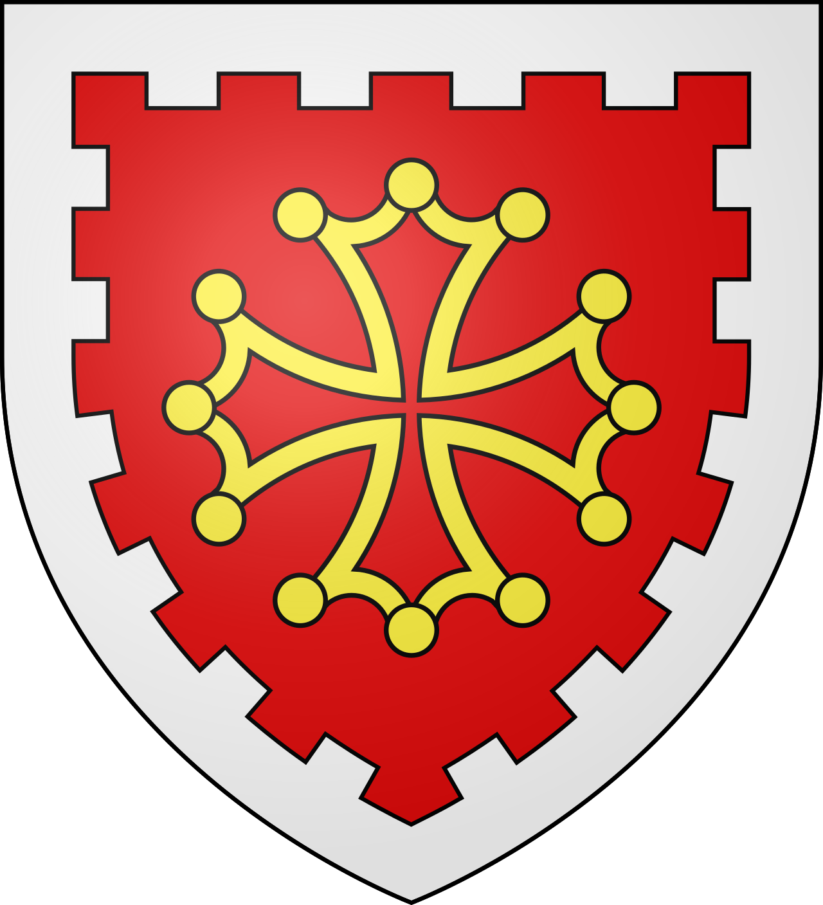
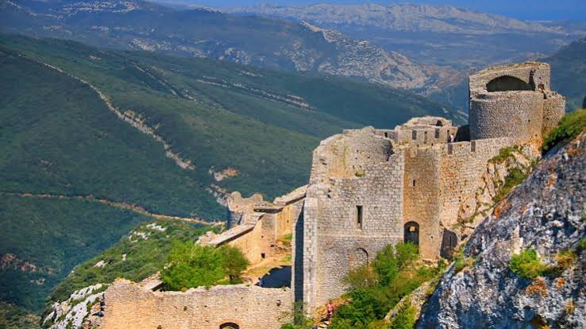

Château de
PeyrepertuseLa « Carcassonne céleste », vaisseau de pierre des Corbières


⟹ Sites Emblématiques ⟸

Entre Narbonne et Perpignan, au cœur des Corbières, Peyrepertuse occupe une immense crête calcaire dominant Duilhac-sous-Peyrepertuse. Le nom vient de Petra Pertusa, la « pierre percée ». Bien avant le château médiéval, le relief est fréquenté par l'homme : des découvertes archéologiques attestent une occupation dès la Préhistoire, puis une présence gallo-romaine, avec notamment des fragments d'amphores, de tuiles et des traces d'habitat. Le site contrôle naturellement les passages entre Corbières, Fenouillèdes et Roussillon.
Le nom de Peyrepertuse apparaît dès l'époque carolingienne : en 842, le territoire est mentionné sous la forme Pago Petrepertuse. Il constitue alors un pagus, c'est-à-dire une circonscription territoriale, dépendant du comté de Razès. Cette ancienneté explique que le château ait donné son nom à tout un pays, le Peyrepertusès. Au début du XIe siècle, la région passe dans l'orbite des comtes de Besalú, puissants seigneurs catalans.

En 1020-1021, Peyrepertuse est cité parmi les possessions de Bernard Taillefer, comte de Besalú. Un châtelain est chargé de la place et donne naissance à la famille seigneuriale de Peyrepertuse. Au cours des XIe et XIIe siècles, le castrum passe dans les réseaux de dépendance de Narbonne puis de Barcelone. En 1155, Bérenger de Peyrepertuse est vassal du comte de Barcelone ; lorsque celui-ci devient roi d'Aragon, la forteresse appartient à un espace politique tourné vers la Catalogne et constitue un verrou septentrional de cette zone d'influence.
Le noyau féodal primitif correspond en grande partie au secteur aujourd'hui appelé Donjon Vieux. Il comprend des ouvrages défensifs, des bâtiments résidentiels et l'église romane Sainte-Marie, attestant qu'il ne s'agit pas seulement d'un poste militaire mais du centre d'un véritable pouvoir seigneurial. La spectaculaire adaptation des constructions à la roche, qui deviendra la marque de Peyrepertuse, commence donc bien avant les grands travaux capétiens.
Lors de la croisade contre les Albigeois, Peyrepertuse ne connaît pas un siège comparable à ceux de Minerve ou de Termes. Le 22 mai 1217, Guillaume de Peyrepertuse se soumet sans combat à Simon de Montfort. La situation reste néanmoins instable. Guillaume est excommunié quelques années plus tard et participe au mouvement de résistance méridionale. Lorsque Raimond II Trencavel tente de reconquérir Carcassonne en 1240, il se joint à la révolte avant de se soumettre définitivement en novembre de la même année.
Le basculement vers le domaine capétien s'opère à la veille de cette révolte : en 1239, Louis IX acquiert les droits sur Peyrepertuse auprès de Nunyo Sanche, seigneur du Roussillon et de Cerdagne. La forteresse devient alors une place royale. Cette mutation ouvre une période de travaux considérables destinés à transformer un ancien château féodal en forteresse de premier rang, capable d'affirmer la puissance du roi de France face à l'Aragon.
En 1242, Saint Louis ordonne notamment l'aménagement du célèbre escalier taillé dans le roc qui permet d'accéder au sommet oriental. Dans les années 1250-1251 est édifié le donjon de Sant Jordi — Saint-Georges — sur le point culminant. Le château s'organise dès lors en plusieurs ensembles complémentaires : l'enceinte basse, le Donjon Vieux autour de Sainte-Marie et, plus haut, Sant Jordi. Murailles, tours semi-circulaires, archères et portes utilisent chaque rupture de pente et chaque paroi naturelle. L'ensemble s'étire sur près de 300 mètres et donne l'impression d'un véritable « vaisseau de pierre » posé sur la falaise.
Le traité de Corbeil de 1258 redéfinit les rapports entre Louis IX et Jacques Ier d'Aragon. Peyrepertuse devient l'un des grands points d'appui de la défense française dans les Corbières, aux côtés de Quéribus, Puilaurens, Aguilar et Termes, traditionnellement réunis sous l'appellation des « cinq fils de Carcassonne ». Carcassonne assure le commandement de ce réseau de forteresses royales. La mission est double : surveiller une frontière sensible et contrôler un territoire languedocien récemment intégré à l'autorité capétienne.
La forteresse reste militairement active pendant plusieurs siècles. En 1285, lors du conflit entre la France et l'Aragon, elle accueille des notables de Perpignan venus chercher refuge. Au XVIe siècle, les guerres de Religion rappellent encore sa valeur stratégique : en 1542, Jean de Graves, seigneur de Sérignan, s'en empare au nom de la Réforme avant que la place ne soit rapidement reprise.
Le traité des Pyrénées de 1659, qui repousse la frontière franco-espagnole sur la chaîne pyrénéenne, prive progressivement Peyrepertuse de sa fonction de sentinelle frontalière. Une petite garnison demeure néanmoins sur place jusqu'à l'époque moderne. Après la Révolution, la forteresse cesse définitivement d'avoir un rôle militaire et devient une ruine monumentale. Classé au titre des Monuments historiques en 1908, le château fait depuis l'objet de campagnes de conservation et de restauration.
Peyrepertuse est donc le résultat de plus d'un millénaire d'occupations et de transformations. Derrière l'image romantique du « château cathare » se lisent plusieurs histoires successives : un site antique, un chef-lieu carolingien, une forteresse féodale liée au monde catalano-aragonais, puis une gigantesque citadelle royale française. Cette stratification, associée à une architecture littéralement fusionnée avec la falaise, en fait l'un des témoignages les plus spectaculaires de l'architecture militaire médiévale du Languedoc.
Perché sur une longue crête calcaire, le château de Peyrepertuse domine à des kilomètres à la ronde garrigue, vignes et vallées encaissées des Corbières. Sa silhouette, qui semble jaillir de la roche elle-même, lui a valu le surnom de « Carcassonne céleste » : à superficie égale à celle de la Cité, c'est le plus vaste des cinq fils de Carcassonne.
Majestueux vaisseau de pierre perché à près de 800 mètres d'altitude, épousant les lignes d'une longue crête calcaire, le château de Peyrepertuse domine les reliefs à des kilomètres à la ronde et jusqu'à la mer Méditerranée.
— Citadelles du vertige, Département de l'AudePar temps clair, le regard porte depuis les remparts jusqu'aux Pyrénées d'un côté et à la Méditerranée de l'autre. Le site communiquait autrefois par signaux avec le château de Quéribus, visible plus au sud, formant avec lui l'un des maillons du réseau de défense de la frontière royale.
Duilhac-sous-Peyrepertuse petit village blotti au pied de la forteresse, point de départ du sentier de visite.
Cucugnan village rendu célèbre par son curé, à quelques kilomètres, point de départ vers le château de Quéribus.
Gorges de Galamus spectaculaire canyon creusé par l'Agly, entre falaises et ermitage troglodytique.
Château de Quéribus dernier bastion cathare à tomber, visible depuis les remparts de Peyrepertuse.